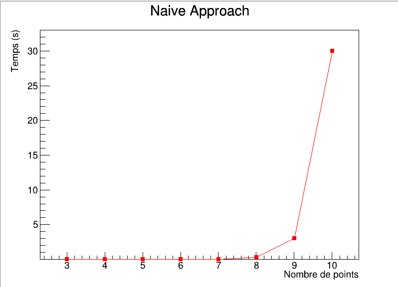

Programme permettant de tester les différents algorithmes de minimisation appliqués au problème du voyageur de commerce. Il est même possible de visualiser les étapes de calcul.
Lors de mon cursus scientifique j’ai été amené à travailler sur les méthodes numériques : ajustement, dérivée, minimisation, équations différentielles, analyse... Plusieurs projets étaient proposés et j’ai choisi de travailler sur le problème du voyageur de commerce qui est un problème récurrent en informatique.
Le but était de minimiser le temps de parcours d’un arbre de N points placés sur un espace à deux dimensions. Les points représentant les villes que le voyageur doit traverser et l’espace entre les points la distance entre les villes. Aucun point de départ n’était imposé, le but était de tester trois méthodes : naïve, recuit simulé et génétique.
La librairie ROOT développée par le CERN était imposée dans le but de se familiariser avec les outils utilisés par les scientifiques. Le projet a donc été développé en C++ et l’affichage se fait grâce à ROOT.
Cette méthode explore tous les chemins possibles pour garder le plus court. Elle permet de trouver le minimum dans 100% des cas cependant le temps de calcul peut devenir très grand lorsque que le nombre de points à parcourir augmente.

Cette méthode fait l’analogie avec le refroidissement d’un système physique. Lorsqu’un système est chaud, sa matière est très agitée et plus il refroidi plus l’agitation diminue pour tendre vers un minimum d’énergie. C’est en faisant cette analogie que l’on essaye de résoudre le problème du voyageur de commerce. On part d’un chemin aléatoire puis on permute le parcours avec une certaine probabilité en gardant le chemin le plus court à chaque étape. Au début la probabilité est grande donc le chemin est amené à changer très fortement puis au cours du temps la probabilité de changement diminue et le chemin s’affine jusqu’à obtenir le chemin le plus court.
Cette méthode a bien fonctionné pour notre problème car il est possible d’augmenter le nombre de points à parcourir sans augmenter le temps de calcul de façon exponentiel. Cette méthode est donc bien meilleure que la précédente.
Cette fois l’analogie se fait du côté de la sélection naturelle. On prend une population de parcours aléatoires puis on applique une série de permutation. On effectue ensuite une sélection sur la population de départ en prenant les chemins intéressants puis on répète la procédure. Cette méthode n’a pas fonctionné comme prévu et a donc été abandonnée car nous avons pu trouver le minimum que pour un nombre de points à parcourir faible.